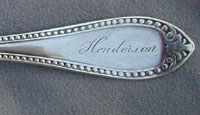
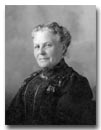
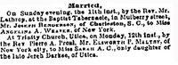

|
|
Important Facts
|
| September 9, 1826 |
Joseph Henderson was born in Charleston, South Carolina. Source: 1865 New York State Census and Joseph's 1878 U.S. Passport Application. |
|
|
According to the 1880 US Federal Census, Joseph's father and mother were both born in South Carolina. Source: 1880 US Federal Census. |
||
| 1838 | The silver spoon on the right, is believed to have belonged to Joseph Henderson. The spoon has been passed down as a family heirloom. The inscription on the back reads "Wm Carrington & Co." In 1830 William Carrington arrived in Charleston, South Carolina. Around 1838 he founded his own firm, W. Carrington & Co, which remained independent until 1872. |
 Henderson - Spoon Wm Carrington & Co. |
|
Joseph was an orphan, raised by a mean Uncle. Source: Jerry Henderson, So Long, It's been good to Know You, page 1. |
||
| 1842 | At sixteen, Joseph Henderson left Charleston, South Carolina to find passage to New York as a cabin boy on a ship traveling to New York. Source: Jerry Henderson, So Long, It's been good to Know You, page.1. | |
| 1845 | It was written in the New York Herald newspaper that "some men on South street remember him in 1845 as a pilot of some standing even then." Source: "Half a Century of Piloting", October 12, 1890, New York Herald. | |
| 1846 | He was listed as "Henderson Joseph, mariner, 325 Front Street, New York City." Source: Doggett's New-York City Directory, for - Page 184. |
|
| 1846 | When Joseph was twenty, he took out his first pilot papers and became adept in all branches of piloting. Source: Charles Edward Russell, "From Sandy Hook to 62°", 1929, page 148. | |
| Fall 1847 |
At age of 21, Joseph was captain of his own schooner and a New York Sandy Hook pilot. Source: United States. Court of Commissioners of Alabama Claims, Goggle Books, 1882-85. v. 21. |
|
| 1848 | Joseph Henderson was listed as a seaman at 325 Front Street and Angelina’s half brother, Maurice D. Weaver, was listed as Pilot at 309 Water Street and his home was also at 93 Roosevelt Avenue. Source: 1848 Doggett's New York City directory. |
 Angelina A. Weaver |
| February 11, 1849 |
On the Sunday evening, the Rev. Edward Lathrop married Joseph Henderson and sixteen year-old Angelina Annetta Weaver at the Baptist Tabernacle Church on Mulberry Street, near Chatham square, in New York City. The marriage was announced in the New York Herald. Rev. Lathrop was from Beaufort, South Carolina, which is near where Joseph was born and raised as a child. Source Marriage announcement in the New York Herald, Feb. 13, 1849, page 4. |
|
| 1849-1850 |
At the age of 23, Joseph was listed as a Pilot living at 93 Roosevelt Avenue in New York City. Source: John Doggett, Jr. & Company, New York City Directory for the 1849-1850 edition. |
 |
| May 12, 1850 | Angelina and Joseph’s first child was a girl, named Sarah Rebecca Henderson was born in New York City. According to the Doggett’s New York City directory, the family was living at 93 Roosevelt Avenue. Source: The 1850 US Federal Census. | |
October 15, 1850 |
The 1850 U.S. Census lists Joseph (23 - Pilot), Angelina A. (18), and Sarah R. (5 Mo.) living in New York City. It also lists Morris D. Weaver (28) as Pilot living in the same Ward. Source: 1850 Census, New York City, Ward 4; Microfilm Roll: M432, roll 536; Page: 278; Image: 558. |
|
1852 |
Joseph was listed as a "Pilot" living on 90 Roosevelt Street, New York City. Roosevelt Street is in the New York City borough of Manhattan, running from Pearl Street southeast to South Street. Source: New York City Directory, 1852, Page 244. |
|
1852 |
Maurice D. Henderson was born in New York City. Source: The 1855 and 1860 US Census. |
Maurice D. Henderson |
1853 |
Joseph was listed at 69 South Street, New York, N. Y., his home was in Brooklyn. 69 South Street was where the office of the Board of Commissioners of Pilots was located. Source: Mary Anthony Lathrop, Mary's Family Connections, 1979, pg. 99. | |
May 16, 1853 |
Joseph Henderson was listed as one of the pilots and owners of the pilot boat Elwood Walter, No. 7, belonging to the Merchant Pilot Association. The pilot boat was named after the president of the Mercantile Insurance Company, and was built by Mr. Edward T. Williams, of Green Point. Source: ProQuest Historical Newspapers The New York Times, pg. 3. | |
September 13, 1853 |
Joseph Henderson was granted his license as a branch pilot on the pilot boat Elwood Walter. Source: Board of Commissioners of Pilots of the State of New York. | |
1854 |
Joseph and his family moved to Franklin Avenue between Willoughby and DeKalb Avenues in Brooklyn, New York.Source: Mary Anthony Lathrop, Mary's Family Connections, 1979, pg. 100. | |
1854 |
Joseph Henderson Jr. was born in Brooklyn, New York. He later married Minnie E. Duryea on January 6, 1876 in Brooklyn, New York. Source: Mary Anthony Lathrop, Mary's Family Connections, 1979, pg. 90. |
Joseph Henderson Jr. |
| June 14, 1855 | The New York State Census lists Joseph (28), Angelina A (22), Sarah R (5), Morris (4), Joseph (2) and Elizabeth Mcgrath (14 Servant from Ireland) living in Ward 7, Brooklyn, Kings, New York. Source: New York, State Census, 1855, Index and Images, FamilySearch: accessed 04 Oct 2013. | |
December 17, 1856 |
Joseph Henderson was listed as being a captain for the pilot boat, the George W. Blunt, No. 11. It was on this ship that he was said to have fallen from the masthead. Source: New York Daily Times. |
Last update: Sunday, February 22, 2026
The text of this page is available for modification and reuse under the terms of the Creative Commons Attribution-Sharealike 3.0 Unported License and the GNU Free Documentation License (unversioned, with no invariant sections, front-cover texts, or back-cover texts).